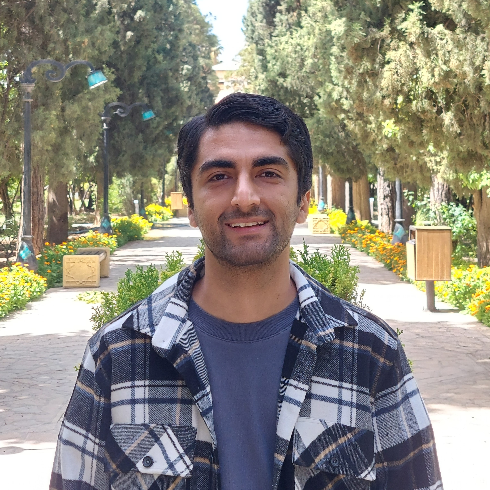
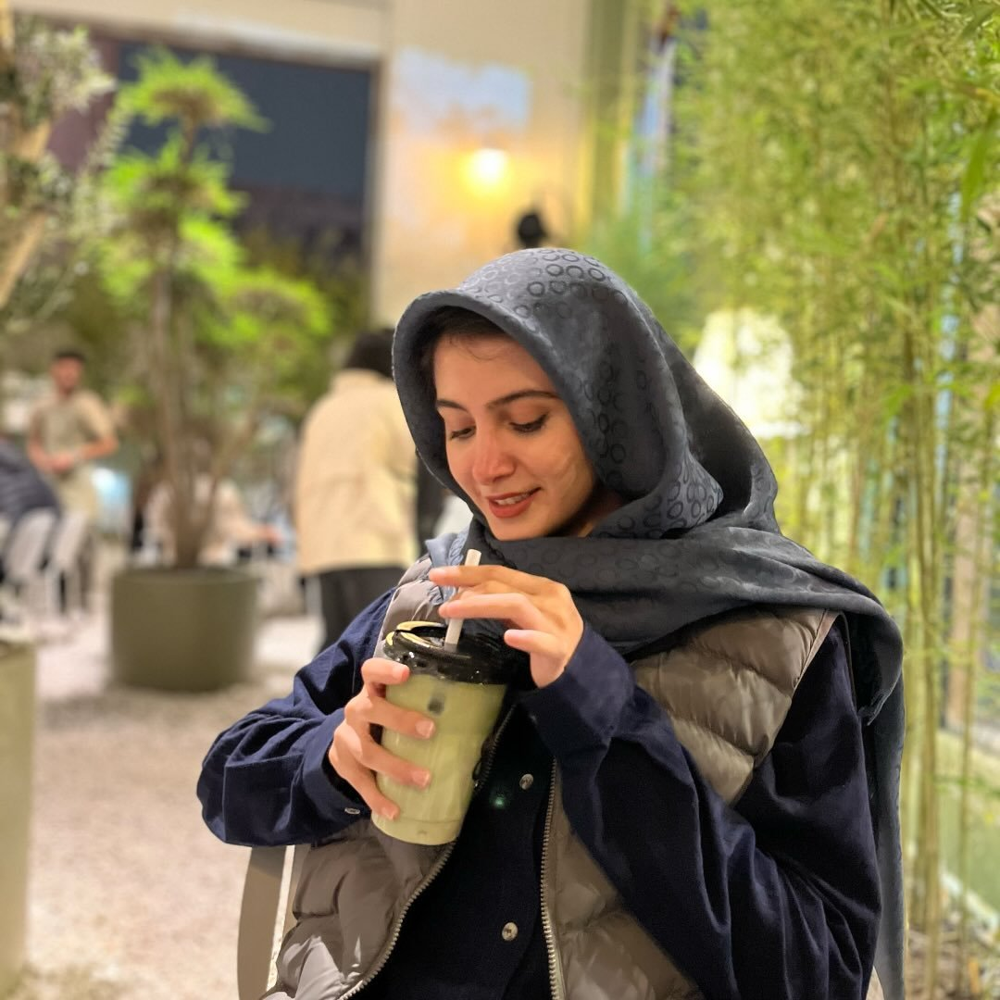

Course Project: Multi-Hop Question Answering with RAG & GraphRAG
پروژه درس: پرسش و پاسخ چندمرحلهای با RAG و GraphRAG
An end-to-end graduate research engineering project building state-of-the-art Multi-Hop Retrieval-Augmented Generation (RAG) and Knowledge Graph (GraphRAG) systems with exact IR evaluation, hybrid retrieval, graph traversal, and Dual-GPU acceleration.
Project Overview & Multi-Hop Problem Formulation
Standard Retrieval-Augmented Generation (RAG) pipelines assume that a single relevant document or passage contains the complete answer to a user query. In real-world enterprise reasoning, legal inquiries, and complex scientific questions, this assumption fails catastrophically. The answer often requires synthesizing facts scattered across multiple distant documents, discovering intermediate "bridge" entities, comparing disparate properties, and constructing an unbroken chain of evidence.
In this semester-long project, you will develop a complete Multi-Hop Question Answering system combining Dense Retrieval, Hybrid Ranking, and Knowledge Graph (GraphRAG) traversal. You will work on an authentic Wikipedia-derived multi-hop corpus consisting of 3,882 passages and rigorous multi-step queries covering comparison, bridging, compositionality, and inference.
Handcraft fundamental information retrieval metrics (Recall@k, HitAll@k, MRR, nDCG@k) from scratch without black-box packages. Implement exact cosine search with document masking to dynamically exclude already-retrieved evidence across multi-hop iterations.
Extract semantic triples (Subject, Relation, Object) to build a graph schema over passage subsets. Traverse 2-hop neighborhood paths to enrich vector prompts with structured relationship contexts for entity disambiguation.
Leverage 30 hours/week of free NVIDIA Dual T4 GPUs on Kaggle. Serve open-weight LLMs (up to 14B parameters) via vLLM with 4-bit AWQ quantization or Hugging Face bitsandbytes for lightning-fast batch scoring across all 300 test queries.
Project Leadership & Mentorship Team
The project follows an interactive mentorship structure. In each phase, after code submission, students participate in a 10–15 minute 1-on-1 oral check-in with an assigned TA to run live sample queries, discuss design choices, and receive immediate actionable feedback.


5-Phase Semester Roadmap & Defense Windows
The project is partitioned into 5 progressive phases designed to build upon each other without cognitive overload. Each phase has a dedicated deadline and an oral defense window:
Dense Retrieval & Evaluation (سنجش و بازیابی متراکم)
- Handcrafted IR metrics (Recall@k, HitAll@k, MRR, nDCG@k) strictly matching
score.py - Exact dense cosine similarity search with document masking (
dense_search(query, k, exclude_ids)) - 3 Baseline systems: Closed-Book, Oracle-Context, and Dense RAG
- Clean, reproducible GitHub repository
- 5 JSONL prediction files (Closed-book dev/hidden, Oracle dev, Dense RAG dev/hidden)
- Max 3-page concise PDF report detailing metrics & analysis
Hybrid Retrieval & Re-ranking (بازیابی ترکیبی و بازرتبهبندی)
Implement BM25 lexical retrieval from scratch. Implement Reciprocal Rank Fusion (RRF) and convex score combination to merge dense and sparse streams. Integrate cross-encoder re-rankers and manage LLM context token budgets.
Hybrid search pipeline code, re-ranked predictions for dev and hidden test splits, ablation study comparing Dense vs. BM25 vs. Hybrid vs. Re-ranked RAG, concise engineering report.
Knowledge Graph & GraphRAG (پایگاه دانش و GraphRAG)
Extract (Subject, Relation, Object) triples from kg_subset_passages.txt (200 passages). Build an entity graph using NetworkX/Neo4j. Implement 2-hop neighborhood traversal and formulate structured graph prompts for GraphRAG.
Knowledge graph serialization, GraphRAG execution script, qualitative comparison of GraphRAG vs. Vector RAG on complex multi-hop relation questions, technical report.
Multi-Hop Routing & Final Evaluation (مسیریابی چندمرحلهای و ارزیابی نهایی)
Build query classification to adaptively route questions (single-hop vs. multi-hop, graph vs. text). Implement iterative reasoning and sub-query rewriting with stop conditions. Perform full evaluation on questions_hidden.jsonl.
End-to-end multi-hop inference pipeline, official final predictions on hidden benchmark, ablation results across all 4 question categories, comprehensive documentation.
Final Defense & Documentation (ارائه و مستندسازی نهایی)
Deliver oral defense presentation, demonstrate end-to-end multi-hop answering live on unseen evaluation queries, present ablation study findings, and prepare open-source portfolio repository.
Polished GitHub repository with complete reproduction instructions, final technical paper/report, live defense slide deck.
Phase 1: Dense Retrieval & Evaluation Technical Guide
Mechanism A Handcrafted Information Retrieval Metrics
You must implement the following metrics from foundational mathematical definitions in pure Python/NumPy without using high-level IR libraries (such as ranx, scikit-learn, or trec_eval). Let $G$ be the set of gold passage IDs for a query, and $d_1, d_2, \dots, d_k$ be the ranked list of retrieved passage IDs:
💡 Validation Check: Your implementations must produce identical numerical outputs to score.py across all 300 dev queries.
Mechanism B Exact Dense Cosine Retrieval with Document Masking
In multi-hop QA, subsequent retrieval hops must uncover new supporting evidence rather than redundantly retrieving passages discovered in earlier steps. Implement a dense search function with document masking:
# 1. Embed query and normalize vector (L2 normalization)
# 2. Compute exact cosine similarity across all 3,882 passages
# 3. For any doc_id in exclude_ids, set similarity score = -inf
# 4. Select top-k documents (guaranteed to return k unmasked passages)
return top_k_doc_ids
Recommended open embedding models: Qwen/Qwen2.5-Coder-0.5B, BAAI/bge-m3, intfloat/multilingual-e5-base, or modern Sentence-Transformers.
3 Baseline Systems Experimental Benchmarks
To measure the exact empirical contribution of retrieval and calibrate model capability, evaluate three baseline setups:
No retrieval context is supplied to the LLM. Tests internal parametric memory.
dev & hidden
The true gold supporting passages (from gold_doc_ids) are directly fed into the LLM context. Represents empirical performance ceiling.
dev only (labels private for hidden)Dense retriever fetches top-$k$ passages ($k \in \{2, 5, 10\}$) to supply as context to the LLM generator.
dev & hiddenPhase 1 Submission Checklist:
- GitHub Repository: Clean structure,
requirements.txtwith pinned versions,README.mdreproduction guide. - 5 Prediction Files (JSONL format):
predictions_closed_book_dev.jsonl,predictions_closed_book_hidden.jsonl,predictions_oracle_dev.jsonl,predictions_dense_rag_dev.jsonl,predictions_dense_rag_hidden.jsonl. - Concise Report (Max 3 Pages PDF): Embedding model choice, retrieval metric tables (Recall@k, HitAll@k, MRR, nDCG@10 for $k \in \{2, 5, 10\}$), baseline generation comparisons (EM, Token F1), and failure analysis.
- Oral Defense Check-In: 10–15 min interactive meeting with Phase 1 Lead TA Mohammad Amin Haeri (@rstlss0).
Course Pack Architecture & Benchmark Schema
The project dataset is packaged in course_pack_v1.zip and mirrored on Kaggle. It contains all corpus passages, splits, ground truth labels, and knowledge graph subsets:
| File Name | Item Count | Schema / Fields | Purpose |
|---|---|---|---|
corpus.jsonl |
3,882 passages | {"doc_id", "title", "text", "sentences": [...]} |
Full retrieval corpus from English Wikipedia |
questions_dev.jsonl |
300 questions | {"qid", "question", "type"} |
Development questions for offline experiments |
labels_dev.jsonl |
300 labels | {"qid", "answer", "aliases", "gold_doc_ids", "gold_sentences", "evidence_triples", "type"} |
Full ground truth for development set |
questions_hidden.jsonl |
300 questions | {"qid", "question", "type"} |
Hidden test questions for TA evaluation & scoring |
kg_subset_passages.txt |
200 doc IDs | List of doc_id strings |
Designated subset for Phase 3 Knowledge Graph construction |
score.py |
Evaluator Script | CLI: --pack course_pack_v1 --split dev |
Official scoring script with 95% bootstrap CI calculation |
Question Taxonomies & Multi-Hop Types:
Kaggle Dual T4 GPU Execution Guide
You do not need a personal high-end GPU. Kaggle provides 30 hours per week of free Dual NVIDIA Tesla T4 GPUs (16GB VRAM each). Follow these key steps outlined in kaggle_howto.pdf:
Verify your Kaggle account with a phone number to unlock GPU access. In your notebook session options: set Accelerator: GPU T4 x2 and enable Internet: ON to download Hugging Face models and packages.
Store your GitHub Personal Access Token (GH_TOKEN) and Hugging Face token (HF_TOKEN) securely via Add-ons ➔ Secrets in Kaggle. Never print or commit tokens into your repository.
For fast batch inference across all 300 test queries, use vLLM with 4-bit AWQ quantized open-weight models (up to ~14B parameters, e.g., Qwen2.5-7B-Instruct-AWQ). Processing takes under 3 minutes!
from vllm import LLM, SamplingParams
llm = LLM(model="Qwen/Qwen2.5-7B-Instruct-AWQ", quantization="awq", dtype="half", max_model_len=8192, gpu_memory_utilization=0.90)
params = SamplingParams(temperature=0, max_tokens=128)
outputs = llm.chat([[{"role": "user", "content": p}] for p in prompts], params)
answers = [o.outputs[0].text for o in outputs]
Evaluation Protocol, Grace Policy & Software Engineering Bonus
Oral Defense Structure
Each phase concludes with a 10–15 minute oral defense. The TA selects 3–5 random queries to run live, tests prompt variations, adjusts hyperparameters ($k$, masking), and discusses failure modes.
Grading Weight Distribution
Approximately 40% of each phase grade is assigned to code correctness, prediction quality, and written reports; 60% is based on technical defense and code mastery.
48-Hour Grace Budget
Each student has 48 free grace hours across the semester. After grace hours, a 0.5-point/hour late deduction applies. The LMS portal remains open for 96 hours (4 days).
Early Submission Bonus
Submitting early with solid results awards bonus hours (up to 24 hours) added back into your semester grace quota.
🏆 Software Engineering & MLOps Extra Credit
Demonstrating production-grade software engineering practices earns extra credit evaluated in 1–2 minutes during oral defense:
run_config.yaml instead of hardcoded values.
pytest): Automated unit tests verifying handcrafted IR metrics and masking logic.